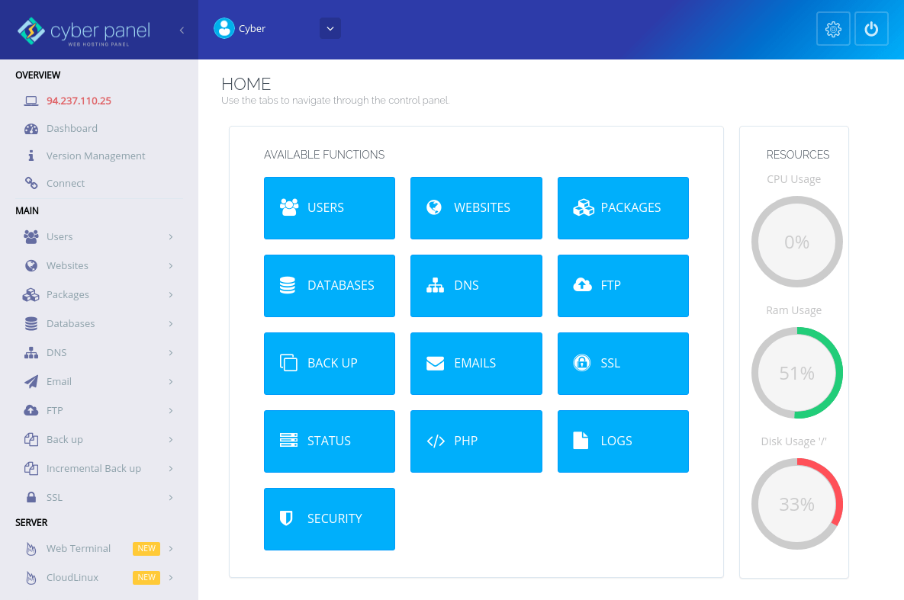

- Detalhes
-
 By Ribamar FS
By Ribamar FS - Categoria: CyberPanel
- Acessos: 158
Por padrão o CyberPabel cria seus backups em uma subpasta 'backup' do domínio e não permite seu download via painel web.
E para que possamos restaurar um backup, caso necessitemos, o arquivo de backup deve obrigatoriamente estar na pasta /home/backup, no caso ser movido de dominio/backup para /home/backup.
Veja como faço atualmente para facilitar estas operações e também trazer uma cópia do backup para o meu desktop.
Adiciono meu user para o grupo do root
sudo adduser ribafs root
Criar o script no servidor
nano /home/ribafs/movebk.sh
#!/bin/bash
echo "Enter domain/subdomain name to move backups to /home/backup. Enter to continue"
read domain
FILE=/home/$domain/backup/*.tar.gz
sudo mv $FILE /home/backup
sudo chown ribafs:root /home/backup/*
Criar o script movecp no desktop
sudo nano /usr/local/bin/movecp
#!/bin/bash
# Executar script do servidor via SSH remotamente
ssh -p 65522 -tt
rsync -av --ignore-existing --progress -e 'ssh -p 65522'
echo "Backup on desktop"
sudo chmod +x /usr/local/bin/movecp
Donos e permissões de arquivos e pastas no servidor do CyberPanel.
Quando criamos um site, ele cria uma pasta com o nome do domínio na pasta /home. Esta pasta tem como dono e grupo algo como domin3454 e as permissões são bem restritivas, 711, drwx--x--x
O CP é muito exigente nestes aspectos. Tanto que de mudarmos o dono do arquivo de backup ou da pasta, já não mais conseguiremos fazer novos backups, pois ele verifica isso antes.
Caso alteremos alguma permissão ou dono, precisamos voltar ao que era antes.
- Detalhes
-
By Ribamar FS
- Categoria: CyberPanel
- Acessos: 133

Change a website domain in CyberPanel
I have a website with the Joomla CMS, which used the test.ribamar.net.br subdomain. So I decided to change to loja.ribamar.net.br. CyberPanel doesn't do this via the web interface and I don't know how, not even via the server terminal.
So I made a backup oftestes.ribamar.net.br and downloaded this backup to my desktop.
I unzipped it. It expands to multiple files and folders.
I accessed the public_html folder and compressed it as loja.zip.
I also got the .sql from the bank.
I went to CP and created a new website, now for loja.ribamar.net.br.
I also created the bank for him, loja_db.
List sites - loja.ribamar.net.br - File Manager.
I opened the loja.ribamar.net.br - public_html folder and uploaded the loja.zip and extracted it,
I went to phpmyadmin and imported the backup sql into the loja_db database.
I went back to the File Manager - I edited configuration.php and adjusted the database data and also $log_path and $tmp_path.
It worked.
- Detalhes
-
By Ribamar FS
- Categoria: CyberPanel
- Acessos: 61
Baixando backup dos sites para o desktop no CyberPanel
Faça o ajuste do user, porta, etc.
Acessar o servido
ssh -p porta user@IP
Adicionar user para o grupo do root
sudo su
adduser ribafs root
Mudar o dono de /home/backup assim:
chown -R ribafs:root /home/ribafs
Criar no servidor
nano /usr/local/bin/perms
#!/bin/sh
clear;
# "Execute com o root."
chown -R ribafs:root /home/backup;
#find /home/backup -type f -exec chmod 664 {} \;
echo "Aguarde..."
chmod +x /usr/local/bin/perms
Criar no desktop
sudo su
nano /usr/local/bin/backups
ssh -p 60022 -t
rsync -av --ignore-existing --progress -e 'ssh -p 60022'
chmod +x /usr/local/bin/backups
Baixando os backups para a pasta /home/ribafs/backup do desktop
backups
- Detalhes
-
By Ribamar FS
- Categoria: CyberPanel
- Acessos: 42

Improving Usability and Security on VPS with CyberPanel
https://ribamar.net.br/index.php/treinamentos/vps/usability-and-security-on-vps-with-cyberpanel
- Detalhes
-
By Ribamar FS
- Categoria: CyberPanel
- Acessos: 55
Restore website in cyberpanel without leaving the desktop
https://ribamar.net.br/index.php/treinamentos/vps/restore-cyberpanel-website